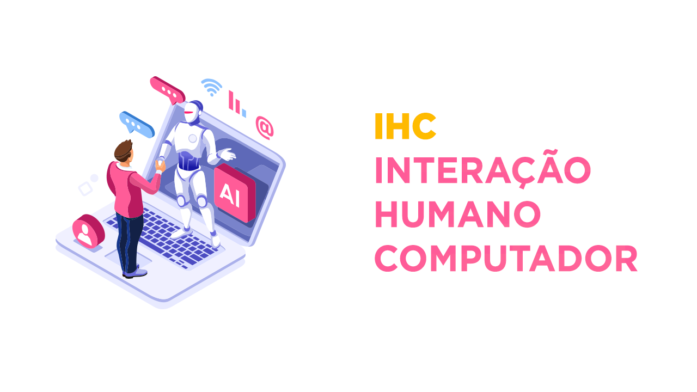
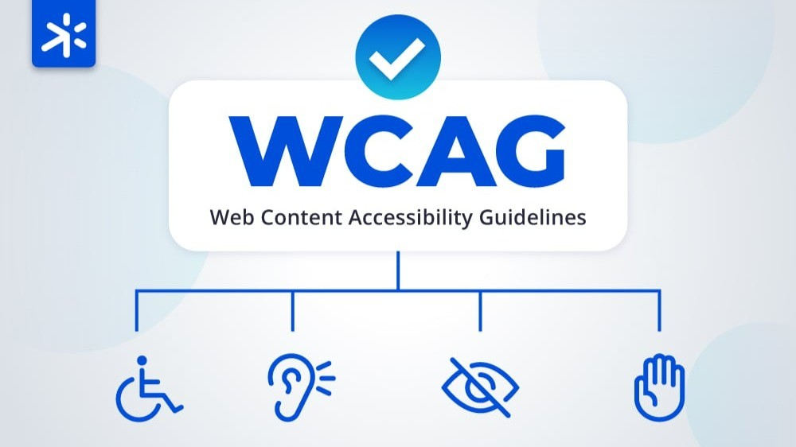
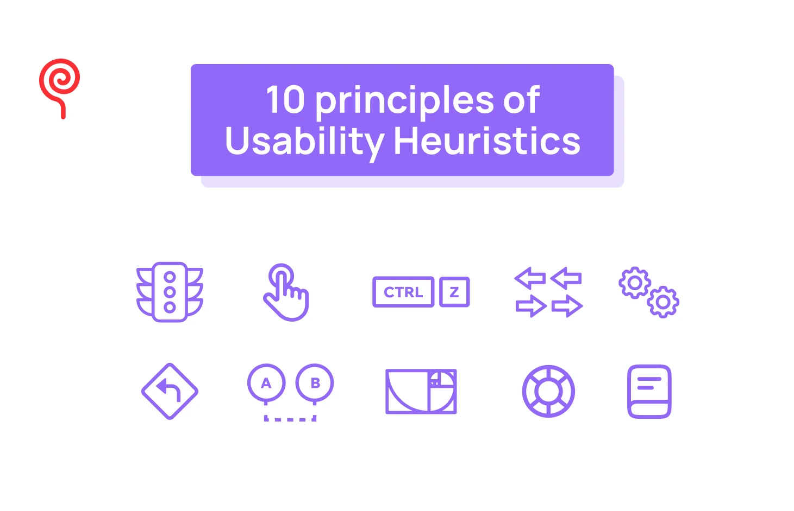

IHC

Interação Humano-Computador (IHC) é o estudo do design e da tecnologia aplicada à interação entre usuário e computador, visando melhorar a usabilidade.
- UI (User Interface): meio de interação com o sistema
- UX (User Experience): qualidade da experiência (fluidez, intuitividade e ergonomia)
WCAG

As WCAG (Web Content Accessibility Guidelines) são diretrizes que orientam o desenvolvimento de sites acessíveis para pessoas com deficiência.
Heurísticas de Nielsen

São princípios criados para avaliar e melhorar a usabilidade de interfaces digitais.
Estrutura Básica HTML
<!DOCTYPE html> Define HTML5.
<html> Estrutura principal.
<head> Metadados.
<title> Nome da aba.
<body> Conteúdo visível.
Tags Semânticas
<header>, <nav>, <main>,
<section>, <article>,
<aside>, <footer>